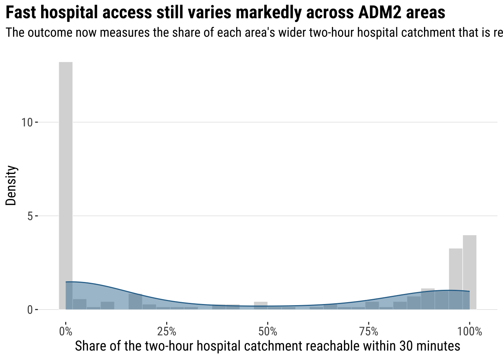
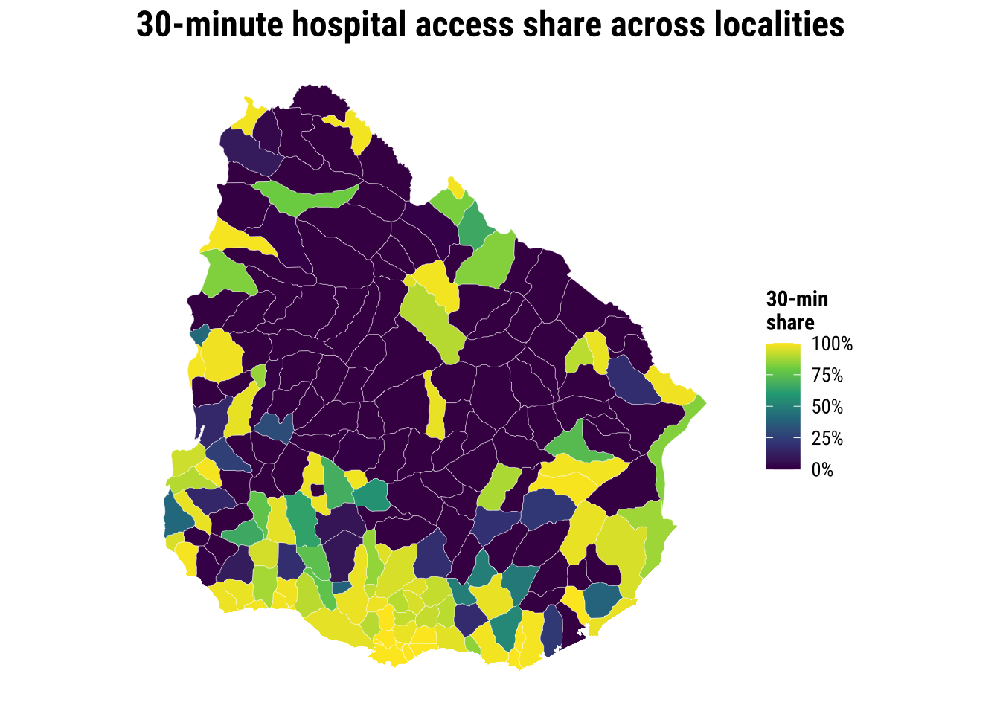
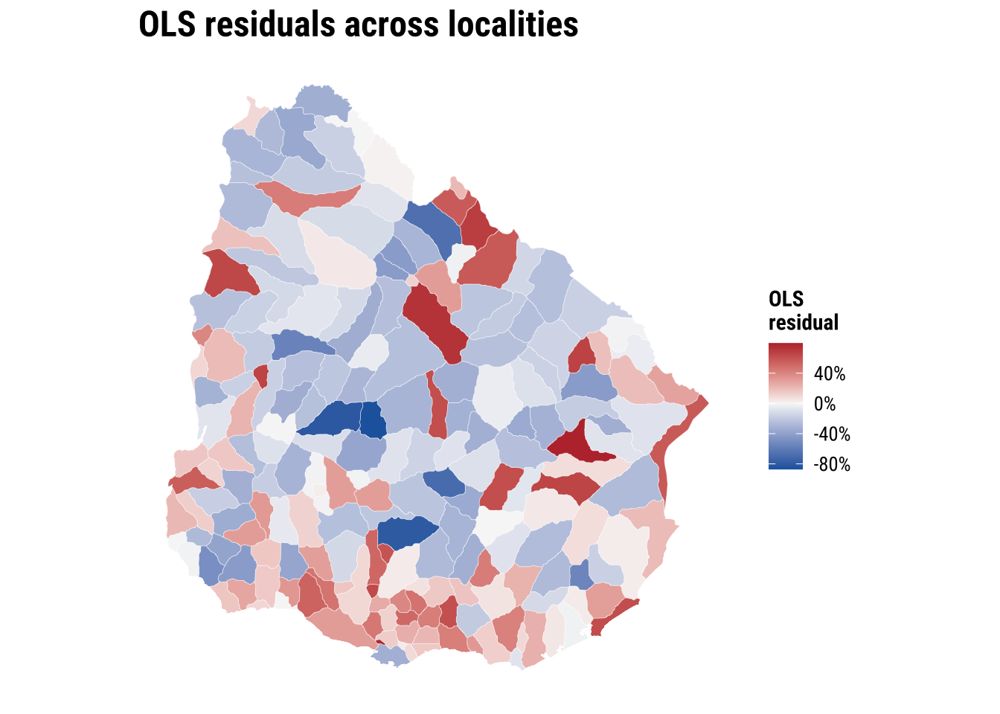
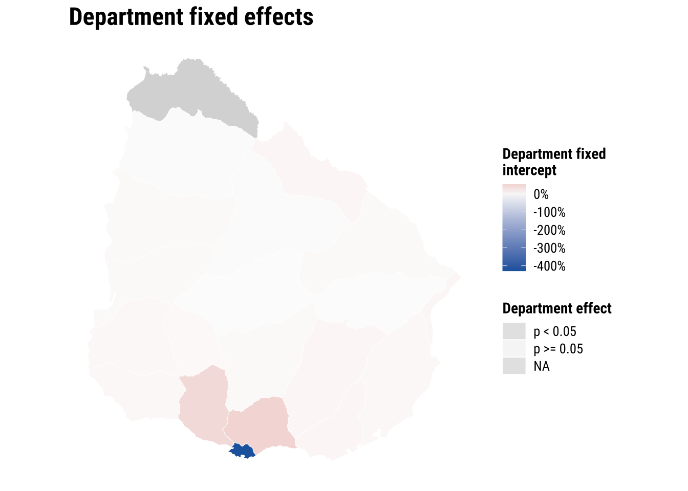
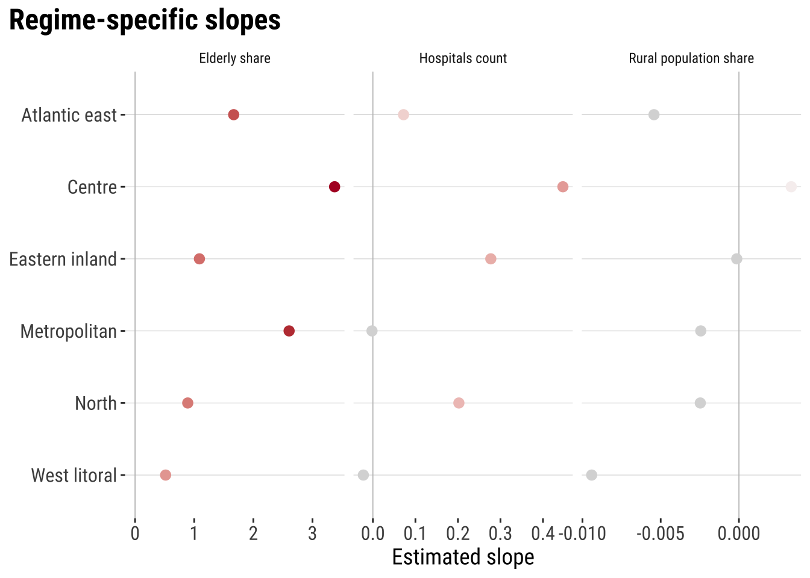
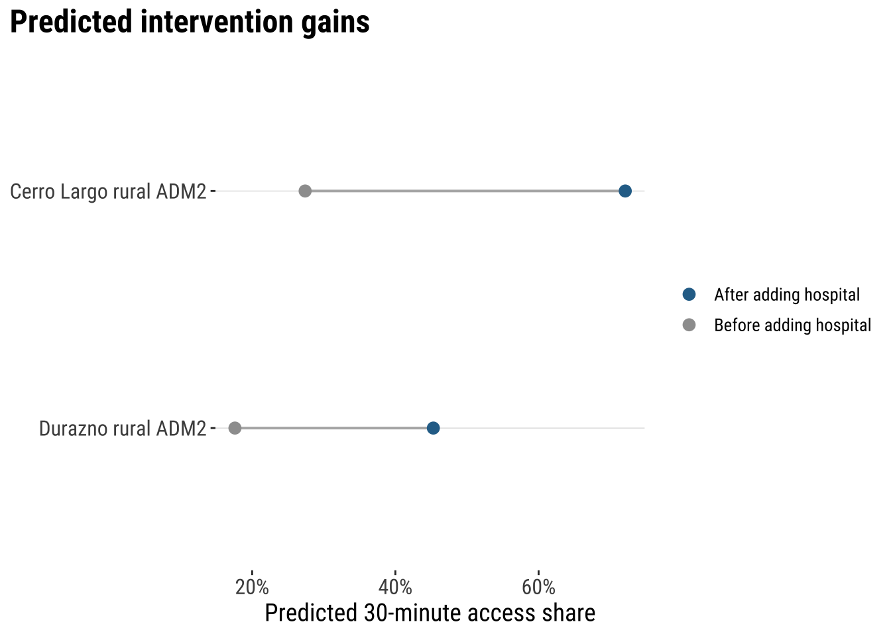

6 Spatial Heterogeneity
This chapter introduces spatial heterogeneity. For this purpose, we will use the same example used in Chapter 05. In the previous chapter, the main question was whether nearby areas influenced one another. Here the question shifts explore if the relationships between our outcome variable and covariates stay constant across space.
Such variability is the core intuition behind spatial heterogeneity. A single coefficient can be a useful summary, but it can hide meaningful regional differences. We used the same descriptive and baseline workflow as in the previous chapter, before extending the analysis in two practical directions: spatial fixed effects, which let intercepts vary across departments, and spatial regimes, which let the covariate relationships vary across broader regional groupings.
By the end of this chapter, you should be able to:
- prepare areal data for a spatial heterogeneity workflow using the same outcome and covariates introduced in Chapter 05;
- fit, interpret, and compare an ordinary linear regression, an ADM1 fixed-effects model, and a spatial regimes model in
R; - assess heterogeneous models with fit statistics and simple diagnostics, and use a fitted regimes model for prediction in practice;
6.1 Dependencies
6.2 Data description
The data source is the same as in Chapter 05 so the focus can remain on the new modelling idea. The main indicators come from the Uruguay Risk Assessment Indicators dataset published through the Humanitarian Data Exchange (HDX). This source provides ADM2-level accessibility, rural population, facilities, and demographic indicators. We complement it with a local ADM2 population table derived from the WorldPop 2020 Uruguay population-count raster, which provides the population denominator needed to construct elderly_share.
The unit of analysis remains the ADM2 area. As in Chapter 05, the outcome is an area-level accessibility outcome derived from the wider hospital catchment. That matters because the chapter asks whether those area-level relationships look similar across the whole country or whether they shift across regional contexts.
# Read the ADM2 boundary layer used for joins and later mapping
adm2_boundaries <- st_read(
"data/boundaries/ury_adm_2020_shp/ury_admbnda_adm2_2020.shp",
quiet = TRUE
) |>
st_make_valid()
# Read the same indicator tables used in the spatial dependence chapter
access_tbl <- read_csv(
"data/risk-assessment-indicators/URY_ADM2_access.csv",
show_col_types = FALSE
)
rural_tbl <- read_csv(
"data/risk-assessment-indicators/URY_ADM2_rural_population.csv",
show_col_types = FALSE
)
facilities_tbl <- read_csv(
"data/risk-assessment-indicators/URY_ADM2_facilities.csv",
show_col_types = FALSE
)
demographics_tbl <- read_csv(
"data/risk-assessment-indicators/URY_ADM2_demographics.csv",
show_col_types = FALSE
)
population_tbl <- read_csv(
"data/derived/ury_adm2_population_worldpop_2020.csv",
show_col_types = FALSE
)# Summarise the main files and variables before joining them
data_snapshot <- tibble(
dataset = c(
"ADM2 boundaries",
"Hospital access indicators",
"Rural population indicators",
"Facility counts",
"Demographic indicators",
"WorldPop ADM2 population"
),
rows = c(
nrow(adm2_boundaries),
nrow(access_tbl),
nrow(rural_tbl),
nrow(facilities_tbl),
nrow(demographics_tbl),
nrow(population_tbl)
),
key_variable = c(
"ADM2_PCODE",
"hospital_access_30min_share",
"rural_pop_perc",
"hospitals_count",
"elderly",
"total_population"
)
)
data_snapshot# A tibble: 6 × 3
dataset rows key_variable
<chr> <int> <chr>
1 ADM2 boundaries 204 ADM2_PCODE
2 Hospital access indicators 204 hospital_access_30min_share
3 Rural population indicators 204 rural_pop_perc
4 Facility counts 204 hospitals_count
5 Demographic indicators 204 elderly
6 WorldPop ADM2 population 204 total_population 6.3 Data wrangling
The wrangling step reuses Chapter 05. We keep the same share outcome and the same covariates so the story continues directly, and we keep the same WorldPop-based population denominator for elderly_share. The only substantial addition is a set of six broad regional regimes. These regimes are still a simplification, but they are designed to reflect recognisable parts of Uruguay while keeping neighbouring departments together. In particular, they separate the Montevideo metropolitan area from the west, the north, the centre, and the eastern departments.
# Join the requested indicators into one ADM2-level modelling table
risk_indicators <- access_tbl |>
select(
ADM2_PCODE,
access_pop_hospitals_30min,
access_pop_hospitals_2h
) |>
left_join(
rural_tbl |>
select(ADM2_PCODE, rural_pop_perc),
by = "ADM2_PCODE"
) |>
left_join(
facilities_tbl |>
select(ADM2_PCODE, hospitals_count),
by = "ADM2_PCODE"
) |>
left_join(
demographics_tbl |>
select(ADM2_PCODE, elderly),
by = "ADM2_PCODE"
) |>
left_join(
population_tbl |>
select(ADM2_PCODE, total_population),
by = "ADM2_PCODE"
) |>
mutate(
# Build the same share outcome used in Chapter 05
hospital_access_30min_share = access_pop_hospitals_30min / pmax(access_pop_hospitals_2h, 1),
# Convert the elderly count into the requested share variable
elderly_share = elderly / pmax(total_population, 1)
)
# Attach the indicators to the ADM2 geometries and create broad spatial regimes
adm2_risk <- adm2_boundaries |>
select(ADM1_ES, ADM1_PCODE, ADM2_ES, ADM2_PCODE, geometry) |>
left_join(risk_indicators, by = "ADM2_PCODE") |>
mutate(
hospital_access_30min_share = as.numeric(hospital_access_30min_share),
rural_pop_perc = as.numeric(rural_pop_perc),
hospitals_count = as.numeric(hospitals_count),
elderly_share = as.numeric(elderly_share)
) |>
filter(
!is.na(hospital_access_30min_share),
!is.na(rural_pop_perc),
!is.na(hospitals_count),
!is.na(elderly_share)
) |>
mutate(
# Group neighbouring departments into six broad regional contexts
regime_6 = case_when(
ADM1_ES %in% c("Montevideo", "Canelones", "San José") ~ "Metropolitan",
ADM1_ES %in% c("Colonia", "Soriano", "Río Negro", "Paysandú") ~ "West litoral",
ADM1_ES %in% c("Artigas", "Salto", "Rivera", "Tacuarembó") ~ "North",
ADM1_ES %in% c("Florida", "Flores", "Durazno") ~ "Centre",
ADM1_ES %in% c("Maldonado", "Rocha") ~ "Atlantic east",
ADM1_ES %in% c("Lavalleja", "Treinta y Tres", "Cerro Largo") ~ "Eastern inland"
),
regime_6 = factor(
regime_6,
levels = c(
"Metropolitan",
"West litoral",
"North",
"Centre",
"Atlantic east",
"Eastern inland"
)
)
)# Check the ranges of the outcome and covariates before modelling
variable_summary <- adm2_risk |>
st_drop_geometry() |>
summarise(
across(
c(hospital_access_30min_share, rural_pop_perc, elderly_share, hospitals_count),
list(min = min, median = median, mean = mean, max = max),
na.rm = TRUE
)
) |>
pivot_longer(
everything(),
names_to = c("variable", ".value"),
names_sep = "_(?=[^_]+$)"
) |>
mutate(across(c(min, median, mean, max), round, 3))
variable_summary# A tibble: 4 × 5
variable min median mean max
<chr> <dbl> <dbl> <dbl> <dbl>
1 hospital_access_30min_share 0 0.16 0.412 1
2 rural_pop_perc 0 100 74.5 100
3 elderly_share 0 0.123 0.119 0.244
4 hospitals_count 0 0 0.647 40 # Summarise the regime design that will be used later in the chapter
regime_summary <- adm2_risk |>
st_drop_geometry() |>
group_by(regime_6) |>
summarise(
adm2_areas = n(),
departments = n_distinct(ADM1_ES),
mean_access_share = round(mean(hospital_access_30min_share), 3),
.groups = "drop"
)
regime_summary# A tibble: 6 × 4
regime_6 adm2_areas departments mean_access_share
<fct> <int> <int> <dbl>
1 Metropolitan 26 3 0.891
2 West litoral 52 4 0.415
3 North 40 4 0.253
4 Centre 32 3 0.274
5 Atlantic east 19 2 0.565
6 Eastern inland 35 3 0.276The main modelling dataframe contains the same core variables as Chapter 05, plus a practical regional grouping for the regimes exercise. That gives us a coherent base for the rest of the chapter: first describing the outcome, then fitting a familiar non-spatial model, and finally asking whether the relationship between outcome and covariates changes across space.
6.4 Data exploration
We quickly reproduce the descriptive analysis from the previous chapter. We analyse how fast hospital access spread across ADM2 areas, or how the share still vary systematically across the country.
plot_access_distribution <- adm2_risk |>
st_drop_geometry() |>
ggplot(aes(x = hospital_access_30min_share)) +
# Show the overall frequency pattern of the share outcome
geom_histogram(
aes(y = after_stat(density)),
bins = 30,
fill = "grey85",
colour = "white",
linewidth = 0.2
) +
# Add a kernel density line to highlight the same distribution more smoothly
geom_density(fill = "#2A6F97", alpha = 0.45, colour = "#2A6F97", linewidth = 0.5) +
scale_x_continuous(labels = label_percent(accuracy = 1)) +
labs(
title = "30-minute hospital access share",
x = "Share of the two-hour hospital catchment reachable within 30 minutes",
y = "Density"
) +
theme_plot_course()
print(plot_access_distribution)
map_access_outcome <- ggplot(adm2_risk) +
# Fill each ADM2 polygon by the fast-access share outcome
geom_sf(aes(fill = hospital_access_30min_share), colour = "white", linewidth = 0.08) +
scale_fill_course_seq_c(
name = "30-min\nshare",
labels = label_percent(accuracy = 1)
) +
labs(
title = "30-minute hospital access share across localities"
) +
theme_map_course()
print(map_access_outcome)
6.5 Baseline modelling
Let us also quickly reproduce our baseline non-spatial regression. Reported below are the estimated coefficients and residuals from the model.
# Fit the shared baseline model before moving to heterogeneous relationships
ols_model <- lm(
hospital_access_30min_share ~ rural_pop_perc + elderly_share + hospitals_count,
data = adm2_risk |> st_drop_geometry()
)
# Tidy the coefficients into a compact teaching table
ols_coefficients <- tidy(ols_model, conf.int = TRUE) |>
mutate(
across(c(estimate, conf.low, conf.high), round, 3),
p.value = round(p.value, 4)
)
ols_coefficients# A tibble: 4 × 7
term estimate std.error statistic p.value conf.low conf.high
<chr> <dbl> <dbl> <dbl> <dbl> <dbl> <dbl>
1 (Intercept) 0.428 0.0884 4.85 0 0.254 0.603
2 rural_pop_perc -0.005 0.000632 -8.45 0 -0.007 -0.004
3 elderly_share 3.14 0.511 6.16 0 2.14 4.15
4 hospitals_count 0.009 0.00843 1.05 0.296 -0.008 0.025# Add fitted values and residuals back to the spatial layer for diagnostics
adm2_risk <- adm2_risk |>
mutate(
ols_fitted = fitted(ols_model),
ols_residual = resid(ols_model)
)
baseline_fit_summary <- glance(ols_model) |>
transmute(
r_squared = round(r.squared, 3),
adj_r_squared = round(adj.r.squared, 3),
sigma = round(sigma, 3),
aic = round(AIC(ols_model), 1)
)
baseline_fit_summary# A tibble: 1 × 4
r_squared adj_r_squared sigma aic
<dbl> <dbl> <dbl> <dbl>
1 0.455 0.447 0.33 133.What can the regression results tell us? The regression results provide one national model with one coefficient per covariate. They provide a useful national summary. Yet they do not help us explain local heterogeneity. The baseline model in fact conceals place-specific differences, which are revealed once, we map the OLS residuals (see below). If broad regional blocks are consistently over- or under-predicted, then a constant-intercept, constant-slope model is likely to be too rigid for the pattern we are trying to explain.
plot_ols_residuals <- ggplot(adm2_risk) +
# Map residuals to see where the national model fits poorly
geom_sf(aes(fill = ols_residual), colour = "white", linewidth = 0.08) +
scale_fill_course_div_c(
name = "OLS\nresidual",
labels = label_percent(accuracy = 1)
) +
labs(
title = "OLS residuals across localities"
) +
theme_map_course()
print(plot_ols_residuals)
The broader conclusion from our results above is that accessibility is unequal across localities in Uruguay. That pattern motivates the spatial heterogeneity question. If the highest and lowest values are not evenly distributed, it is plausible that the same covariates do not operate identically everywhere. Spatial heterogeneity is manifested by observing different values in different places. Yet, it is fundamentally about whether the process itself may be working under different conditions across space, so that the relationship between accessibility and its covariates changes from one territorial context to another. In applied terms, the same increase in hospital supply, the same level of rurality, or the same age structure may not translate into the same accessibility outcome everywhere because places differ in settlement structure, transport connections, service organisation and wider regional context.
6.6 Modelling spatial heterogeneity
What we need is modelling strategies that handle spatial heterogeneity. We cover two complementary ways to handle spatial heterogeneity. The first spatial fixed effects allows each department to have its own intercept, assuming slopes remain constant. Allowing only the intercept to vary means that different places are allowed to begin from different baseline levels of the outcome, while the effect of each explanatory variable is still assumed to be the same everywhere. A spatial fixed-effects model recognises that places may differ because of unobserved background conditions such as history, institutions, geography, policy context, or other local characteristics that are not fully captured by the observed covariates. What it does not allow is for the relationship between the predictors and the outcome to change across space. Spatial fixed effects capture differences in level, but not differences in process. Places may start higher or lower, but the same covariates are still assumed to operate in the same way everywhere.
The second spatial regimes goes further by allowing the relationships between the covariates and the outcome to vary across broader regional groupings. A spatial regimes model goes one step further by allowing not only the baseline level of the outcome to differ across regions, but also the relationship between the explanatory variables and the outcome itself to vary across space. This means we no longer assume that the same process operates everywhere in the same way. Instead, the effect of a predictor can be stronger, weaker, or even different in sign depending on the regional context. This is useful when we think that places are not only starting from different baseline conditions, but are also shaped by different structural contexts, institutional arrangements, service systems or territorial dynamics. In that sense, spatial regimes capture differences in process as well as differences in level, because they allow the model to reflect the possibility that the same covariate does not have the same meaning or effect everywhere.
6.6.1 Spatial fixed effects
We will use departments or ADM1 as spatial fixed effects. Such a model capture persistent department-level differences that are hard to measure directly, we do not have data to measure, or remain unobserved. Intuitivaly the model addresses he following question: do some departments still sit systematically above or below the national intercept, after controlling for rurality, age structure, and hospital count?
# Let each ADM1 department have its own intercept while keeping common slopes
fe_model <- lm(
hospital_access_30min_share ~ rural_pop_perc + elderly_share + hospitals_count + ADM1_ES,
data = adm2_risk |> st_drop_geometry()
)
# Keep the non-fixed-effect coefficients in a short comparison table
fe_main_coefficients <- tidy(fe_model, conf.int = TRUE) |>
filter(!str_detect(term, "^ADM1_ES")) |>
mutate(
across(c(estimate, conf.low, conf.high), round, 3),
p.value = round(p.value, 4)
)
fe_main_coefficients# A tibble: 4 × 7
term estimate std.error statistic p.value conf.low conf.high
<chr> <dbl> <dbl> <dbl> <dbl> <dbl> <dbl>
1 (Intercept) 0.184 0.145 1.27 0.206 -0.102 0.47
2 rural_pop_perc -0.003 0.000735 -4.57 0 -0.005 -0.002
3 elderly_share 1.94 0.563 3.44 0.0007 0.824 3.05
4 hospitals_count 0.119 0.0293 4.07 0.0001 0.061 0.177# Reconstruct the department-specific intercept adjustments for mapping
reference_adm1 <- levels(model.frame(fe_model)$ADM1_ES)[1]
adm1_effects <- tidy(fe_model, conf.int = TRUE) |>
filter(str_detect(term, "^ADM1_ES")) |>
transmute(
ADM1_ES = str_remove(term, "^ADM1_ES"),
fixed_effect = estimate,
significance = if_else(p.value < 0.05, "p < 0.05", "p >= 0.05")
) |>
bind_rows(
tibble(
ADM1_ES = reference_adm1,
fixed_effect = 0,
significance = "Reference"
)
)
adm1_effect_map <- adm2_risk |>
select(ADM1_ES, geometry) |>
left_join(adm1_effects, by = "ADM1_ES") |>
group_by(ADM1_ES) |>
summarise(
fixed_effect = first(fixed_effect),
significance = first(significance)
)The map below shows the department-specific intercepts from the spatial fixed-effects model. These intercepts capture baseline differences in fast hospital access that remain after controlling for rurality, elderly share and hospital count. Fill colour shows the size and direction of the department effect, while transparency indicates whether the department effect is statistically distinguishable from the reference department. Most departments are close to the reference level, which suggests that once these covariates are taken into account, department-level differences in baseline accessibility are not very large across most of the country. Montevideo stands out clearly, however, indicating that its baseline level of accessibility remains substantially different from the rest of Uruguay even after adjusting for the observed covariates. This suggests that there are contextual features of the metropolitan area, such as service concentration, network structure or urban form, that are not fully captured by the variables included in the model.
map_fixed_effects <- ggplot(adm1_effect_map) +
# Map the department-level intercept shifts implied by the fixed-effects model
geom_sf(aes(fill = fixed_effect, alpha = significance), colour = "white", linewidth = 0.15) +
scale_fill_course_div_c(
name = "Department fixed\nintercept",
labels = label_percent(accuracy = 1)
) +
scale_alpha_manual(
name = "Department effect",
values = c("p < 0.05" = 1, "p >= 0.05" = 0.35, "Reference" = 0.75),
drop = FALSE
) +
labs(
title = "Department fixed effects"
) +
theme_map_course()
print(map_fixed_effects)
The fixed-effects model is useful as a way of recognising that departments can differ for reasons not fully captured by our three observed covariates. Its strength is that it absorbs persistent regional differences without abandoning a relatively simple specification. Its limitation is that it still assumes the slopes for rurality, age structure, and hospital count are the same everywhere.
6.6.2 Spatial regimes
Spatial regimes relax that constant-slope assumption. Instead of only allowing intercepts to differ, we let the covariate relationships vary across a small number of broad regional contexts. Here we use six contiguous regimes so the model remains interpretable while better reflecting some of the main territorial contrasts in Uruguay, especially the distinct position of the Montevideo metropolitan area. We do not carry on using departments as the number of parameters to estimate are too many relative to the number of observations in the dataset. This is a practical trade off that we need to accept. Also note that the six-class regionalisation that we use is quite rough and may not have any significant meaning. More appropriate regionalisation can be developed based on the strength of commuting, migration or trade flows connecting areas. The most effective way to group areas may eventually depend on the purpose of the analysis.
# Allow the covariate relationships to vary across the six broad regimes
regime_model <- lm(
hospital_access_30min_share ~ regime_6 * (rural_pop_perc + elderly_share + hospitals_count),
data = adm2_risk |> st_drop_geometry()
)
# Keep the main regime-model coefficients in a short comparison table
regime_main_coefficients <- tidy(regime_model, conf.int = TRUE) |>
filter(!str_detect(term, "^regime_6.*:")) |>
mutate(
across(c(estimate, conf.low, conf.high), round, 3),
p.value = round(p.value, 4)
)
regime_main_coefficients# A tibble: 9 × 7
term estimate std.error statistic p.value conf.low conf.high
<chr> <dbl> <dbl> <dbl> <dbl> <dbl> <dbl>
1 (Intercept) 0.638 0.291 2.19 0.0296 0.064 1.21
2 regime_6West litoral 0.415 0.352 1.18 0.239 -0.279 1.11
3 regime_6North -0.359 0.325 -1.11 0.270 -0.999 0.282
4 regime_6Centre -1.16 0.373 -3.10 0.0022 -1.90 -0.422
5 regime_6Atlantic east -0.008 0.423 -0.0189 0.985 -0.842 0.826
6 regime_6Eastern inland -0.542 0.334 -1.62 0.106 -1.20 0.117
7 rural_pop_perc -0.002 0.00139 -1.76 0.0807 -0.005 0
8 elderly_share 2.60 1.79 1.45 0.148 -0.935 6.14
9 hospitals_count -0.002 0.00742 -0.281 0.779 -0.017 0.013# Translate the interaction model into regime-specific slopes for each covariate
get_regime_slope <- function(regime_name, variable_name) {
interaction_name <- paste0("regime_6", regime_name, ":", variable_name)
interaction_effect <- if (interaction_name %in% names(coef(regime_model))) {
coef(regime_model)[[interaction_name]]
} else {
0
}
coef(regime_model)[[variable_name]] + interaction_effect
}
regime_slopes <- crossing(
regime_6 = levels(adm2_risk$regime_6),
variable = c("rural_pop_perc", "elderly_share", "hospitals_count")
) |>
mutate(
estimate = map2_dbl(regime_6, variable, get_regime_slope),
variable = recode(
variable,
rural_pop_perc = "Rural population share",
elderly_share = "Elderly share",
hospitals_count = "Hospitals count"
)
)
regime_slopes |>
mutate(estimate = round(estimate, 3))# A tibble: 18 × 3
regime_6 variable estimate
<chr> <chr> <dbl>
1 Atlantic east Elderly share 1.67
2 Atlantic east Hospitals count 0.072
3 Atlantic east Rural population share -0.005
4 Centre Elderly share 3.37
5 Centre Hospitals count 0.447
6 Centre Rural population share 0.003
7 Eastern inland Elderly share 1.09
8 Eastern inland Hospitals count 0.277
9 Eastern inland Rural population share 0
10 Metropolitan Elderly share 2.60
11 Metropolitan Hospitals count -0.002
12 Metropolitan Rural population share -0.002
13 North Elderly share 0.891
14 North Hospitals count 0.202
15 North Rural population share -0.002
16 West litoral Elderly share 0.517
17 West litoral Hospitals count -0.022
18 West litoral Rural population share -0.009plot_regime_slopes <- ggplot(
regime_slopes,
aes(x = estimate, y = fct_rev(regime_6), colour = sqrt(estimate))
) +
# Draw a zero line so positive and negative slopes are easier to compare
geom_vline(xintercept = 0, colour = "grey75", linewidth = 0.3) +
geom_point(size = 2.6) +
facet_wrap(~variable, scales = "free_x") +
scale_colour_course_div_c(name = "Slope") +
labs(
title = "Regime-specific slopes",
x = "Estimated slope",
y = NULL
) +
theme_plot_course() +
theme(legend.position = "none")
print(plot_regime_slopes)
This is the key substantive payoff of spatial regimes. The regimes model shows that one national coefficient may be too simple to describe a geographically differentiated process. In one part of the country, the local hospital stock may be much more strongly associated with fast access than in another. Rurality may also matter differently across regions. For social-science applications, that is often the central lesson. The direction and size of an association can depend on where it is estimated.
# Extract the interaction terms so the heterogeneity evidence is easy to inspect
regime_inference_summary <- tidy(regime_model, conf.int = TRUE) |>
filter(str_detect(term, "^regime_6.*:")) |>
transmute(
term,
estimate = round(estimate, 3),
conf_low = round(conf.low, 3),
conf_high = round(conf.high, 3),
p_value = round(p.value, 4)
)
regime_inference_summary# A tibble: 15 × 5
term estimate conf_low conf_high p_value
<chr> <dbl> <dbl> <dbl> <dbl>
1 regime_6West litoral:rural_pop_perc -0.007 -0.011 -0.003 0.0011
2 regime_6North:rural_pop_perc 0 -0.004 0.004 0.987
3 regime_6Centre:rural_pop_perc 0.006 0.002 0.01 0.0062
4 regime_6Atlantic east:rural_pop_perc -0.003 -0.008 0.002 0.266
5 regime_6Eastern inland:rural_pop_perc 0.002 -0.002 0.007 0.314
6 regime_6West litoral:elderly_share -2.09 -6.05 1.87 0.300
7 regime_6North:elderly_share -1.71 -5.88 2.46 0.418
8 regime_6Centre:elderly_share 0.769 -3.65 5.19 0.732
9 regime_6Atlantic east:elderly_share -0.937 -5.58 3.71 0.691
10 regime_6Eastern inland:elderly_share -1.52 -5.77 2.73 0.482
11 regime_6West litoral:hospitals_count -0.02 -0.176 0.135 0.797
12 regime_6North:hospitals_count 0.204 0.086 0.323 0.0008
13 regime_6Centre:hospitals_count 0.449 0.249 0.649 0
14 regime_6Atlantic east:hospitals_count 0.074 -0.084 0.233 0.356
15 regime_6Eastern inland:hospitals_count 0.279 0.125 0.434 0.00056.6.3 Model assessment
Once the three models are fitted, we can compare whether the extra spatial flexibility actually improves fit. No single metric is decisive on its own. Adjusted R-squared gives a familiar summary of explained variation. AIC penalises unnecessary complexity, and RMSE or MAE show prediction error in the outcome’s own units.
# Compare fit and error across the baseline and heterogeneous models
model_assessment <- tibble(
model = c("OLS", "ADM1 fixed effects", "Spatial regimes"),
rmse = c(
sqrt(mean(resid(ols_model)^2)),
sqrt(mean(resid(fe_model)^2)),
sqrt(mean(resid(regime_model)^2))
),
mae = c(
mean(abs(resid(ols_model))),
mean(abs(resid(fe_model))),
mean(abs(resid(regime_model)))
),
adj_r_squared = c(
summary(ols_model)$adj.r.squared,
summary(fe_model)$adj.r.squared,
summary(regime_model)$adj.r.squared
),
aic = c(
AIC(ols_model),
AIC(fe_model),
AIC(regime_model)
)
) |>
mutate(
rmse = round(rmse, 3),
mae = round(mae, 3),
adj_r_squared = round(adj_r_squared, 3),
aic = round(aic, 1)
)
model_assessment# A tibble: 3 × 5
model rmse mae adj_r_squared aic
<chr> <dbl> <dbl> <dbl> <dbl>
1 OLS 0.327 0.264 0.447 133.
2 ADM1 fixed effects 0.282 0.223 0.547 109
3 Spatial regimes 0.252 0.188 0.636 66.4The comparison should be read analytically rather than mechanically. Adjusted R2 summarises explained variation suggesting that spatial regimes explain a greater portion of the variability in accessibility. AIC tells us whether that improvement is worth the added complexity. RMSE and MAE tell us that residuals are smaller for spatial regimes so they better contribute to explain local differences in accessibility. The fixed-effects model often captures important baseline structure, while the regimes model adds a different kind of insight by showing where relationships vary rather than only where average levels differ.
6.7 Model prediction
Prediction is our final step. It is a direct way to turn our fitted model into a practical tool. Instead of predicting a generic average case, we can use the fitted spatial regimes model to explore a simple intervention scenario. Suppose a policymaker is considering adding one hospital in a predominantly rural (ADM2) area and wants to know where the expected gain in fast access would be larger. A regimes model is useful here because it allows the expected effect of the same intervention to differ across regional contexts.
To illustrate this, we compare two highly rural ADM2 areas that currently have no hospitals: Durazno in the Centre regime and Cerro Largo in the Eastern inland regime. We keep all their other characteristics fixed, increase hospitals_count from 0 to 1, and then use the fitted model to estimate the change in hospital_access_30min_share. This is not a full causal evaluation of where a hospital should actually be built. It is a what-if exercise that shows how a heterogeneous model can support intervention assessment.
# Select two highly rural ADM2 areas with no hospitals for a what-if comparison
intervention_areas <- adm2_risk |>
st_drop_geometry() |>
filter(
(ADM1_ES == "Durazno" & ADM2_ES == "n.a63") |
(ADM1_ES == "Cerro Largo" & ADM2_ES == "n.a34")
) |>
transmute(
area = c(
"Durazno rural ADM2",
"Cerro Largo rural ADM2"
),
regime_6,
rural_pop_perc,
elderly_share,
hospitals_count,
observed_share = hospital_access_30min_share
)
# Predict fast access before and after adding one hospital
intervention_results <- intervention_areas |>
mutate(
predicted_before = predict(regime_model, newdata = intervention_areas),
predicted_after = predict(
regime_model,
newdata = intervention_areas |>
mutate(hospitals_count = hospitals_count + 1)
),
predicted_gain = predicted_after - predicted_before
) |>
mutate(
across(
c(observed_share, predicted_before, predicted_after, predicted_gain),
~ round(.x, 3)
)
)
intervention_results area regime_6 rural_pop_perc elderly_share
1 Durazno rural ADM2 Eastern inland 100 0.08651266
2 Cerro Largo rural ADM2 Centre 100 0.13645179
hospitals_count observed_share predicted_before predicted_after
1 0 0 0.176 0.453
2 0 0 0.274 0.721
predicted_gain
1 0.277
2 0.447plot_intervention_results <- intervention_results |>
select(area, predicted_before, predicted_after) |>
pivot_longer(
cols = c(predicted_before, predicted_after),
names_to = "scenario",
values_to = "predicted_share"
) |>
mutate(
scenario = recode(
scenario,
predicted_before = "Before adding hospital",
predicted_after = "After adding hospital"
)
) |>
ggplot(aes(x = predicted_share, y = fct_rev(area), colour = scenario)) +
# Link the before and after predictions for each intervention case
geom_line(aes(group = area), colour = "grey70", linewidth = 0.7) +
geom_point(size = 2.8) +
scale_x_continuous(labels = label_percent(accuracy = 1)) +
scale_colour_manual(
values = c(
"Before adding hospital" = "#9E9E9E",
"After adding hospital" = "#2A6F97"
),
name = NULL
) +
labs(
title = "Predicted intervention gains",
x = "Predicted 30-minute access share",
y = NULL
) +
theme_plot_course()
print(plot_intervention_results)
The comparison is intuitive. In both places, the fitted regimes model predicts that adding one hospital would increase the share of the local hospital catchment that can be reached within 30 minutes. But the expected gain is larger in the Durazno case than in the Cerro Largo case. In this narrow model-based sense, the Durazno intervention looks more optimal, because the same one-hospital increase is associated with a larger predicted improvement in the outcome.
This is the practical value of the regimes model. It helps us compare the likely impact of the same intervention across places instead of assuming that the effect must be identical everywhere. At the same time, the exercise needs to be interpreted carefully. The model is observational, the scenario changes only one variable, and real decisions would also need to consider costs, travel networks, service capacity, population need, and implementation feasibility. Even so, the example shows how a fitted spatial regimes model can support intuitive what-if thinking about spatially differentiated interventions.
6.8 What to take away
The main general take away points are:
- spatial heterogeneity starts from the idea that the same process may not operate in exactly the same way everywhere
- the distinction between differences in level and differences in process, and why fixed effects capture the first while regimes can capture both
- the modelling logic behind OLS, spatial fixed effects, and spatial regimes models
- the comparative strategy of using heterogeneous models to improve interpretation, fit, and the explanation of remaining spatial structure
- the practical value of spatial regimes for simple intervention assessment and what-if analysis across different territorial contexts